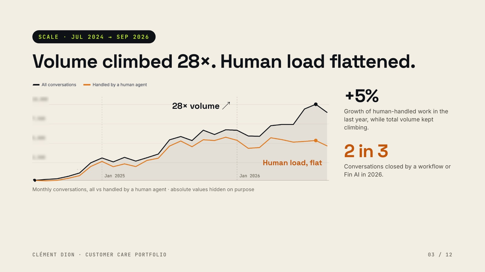
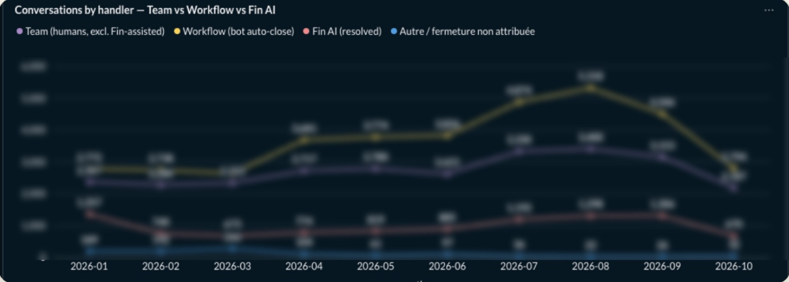
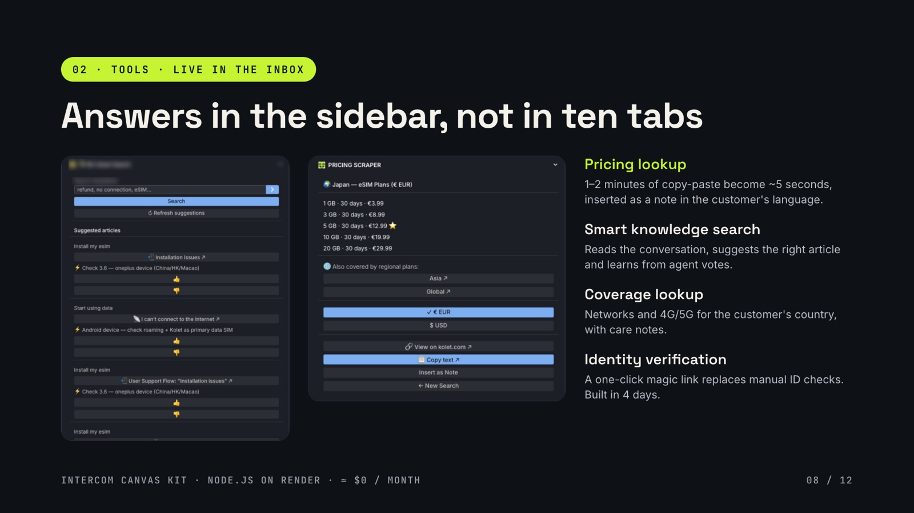
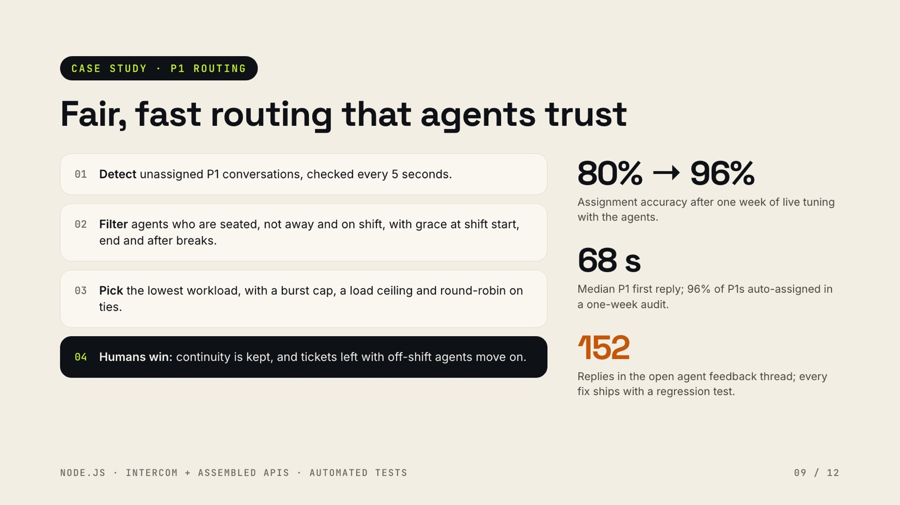

Global Head of Customer Operations at Kolet (travel eSIM), founding team. I design, build and run the AI agents and automations used daily by Care, Sales, Marketing and Tech. 12 years in customer operations at Apple, Back Market, Alan and Kolet.
Growth went to automation, not hires. Every system below runs in production and is used every day.

June to August 2026, without the hire planned for the summer. First reply time −36% over the same period.
Care cost per paid order, Q2 → Q3 2026, while paid orders grew 49%. Per conversation, the strictest view: −12%.
For the in-house tools. Care cost = agent pay + Fin AI fees.
Every system: where we started, the problem, the manual work it removed, and what the data shows.
Competitor price watch (4,859 plans, 222 countries, weekly) · daily catalogue coverage monitor (35 smoke checks) · workforce planning engine (Erlang C, 15-minute intervals, 59 tests) · automatic work log (494 dated entries from Slack and Gmail).
Sales prospect lists (9 airlines, 4 hotel groups profiled) · a B2B lead-qualification agent with fields defined by Sales · an e-reputation agent for Marketing · a fraud sweep requested by the COO.

19 repositories, 18 of them private because they hold company data. One is public: the smart knowledge search that runs in the agents' inbox.


I own Care, app & web QA, network quality, fraud & payments and partner operations. The agents follow the same scope.
Every agent follows the same design: read-only by default, deterministic guard hooks, knowledge and evals versioned in GitHub, and a human approves the action.
Scheduled routine, Slack mention or a "QA this" command.
Reads its rules, playbooks and knowledge from Git, then queries systems read-only.
Release QA agent. Each candidate issue passes all seven, or is dropped and kept in the run file.
Checks applied ÷ checks the knowledge required. Hits, false positives and, above all, escapes.
From run C, a script derives the required checks and CI blocks any run that skips one.
First measured run: 3 of 4 issues raised by the product team were missed. Each became a check.
First run: 1 valid finding out of ~10. Small numbers, read as direction, not proof.
The tools are built with the people who use them. Agents shape them in the open, and quality went up while the team scaled.